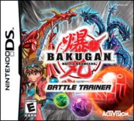

网易末世生存旗舰手游。写实 3D 开放世界，尸潮入侵、基地建造、PVE+PVP、采集制造、多人联机。国内生存手游品类绝对头部，长线运营超 7 年。
O病毒将世界撕成两半：方舟上的「安全人类」和废土上的「被遗弃者」。你属于后者。没有政府救援、没有军队保护，你拥有的只是一双手和对明天的执念。你从零开始——砍下第一棵树、搭起第一面墙、在第一个夜晚挺过尸潮。营地从几根木桩长成一座小镇，陌生人变成生死搭档，末日反而催生出最原始的人际纽带。
但废土没有田园牧歌。北方帝国的巡逻队带着枪和命令南下，贸易联盟的商人用粮食换你的忠诚，教会的传教士低语着「先知能解释一切」。三方势力把你的营地变成棋盘上的棋子，而更大的危机正在酝酿——一部分幸存者开始主动注入病毒，成为半感染者，他们拥有超越常人的力量，却也被两个世界同时抛弃。
在末世的灰烬里，你是选择留在阳光下坚守人类底线，还是坠入地下城拥抱禁忌的力量？当生存的代价不断攀升，「活着」和「还是人」之间的界限，究竟在哪里？
《明日之后》的视觉语言扎根于写实3D渲染，用偏冷的环境色调铺设末世荒凉，再以暖光营地、手工质感家具、角色间的互动细节注入人情温度。它不追求恐怖片式的极端血腥，而是用锈迹斑斑的金属、长满苔藓的混凝土、雨后泥泞的地面传递「文明退场后自然接管一切」的视觉逻辑。角色装扮介于功能性防护服和个性化时装之间，既保留生存实用感又满足审美表达。UI设计延续废土工业风，粗糙纹理搭配橙黄警示色系，让信息界面本身也成为世界观的一部分。
2018年公测初期以「写实灰绿废土」为视觉锚点，画面偏暗沉朴素，强调荒野求生的孤独感。2019-2020年随地图扩张加入雪山、沙漠、热带等多气候biome，色彩丰富度显著提升。2021年半感染者更新引入「地下城霓虹」视觉风格，打破纯写实基调。2023年简单生存服推出后UI全面轻量化改版，降低信息密度。2026年「重生日」大版本是视觉分水岭——经典地图高清翻新，光影升级到PBR标准，植被密度与天气粒子效果大幅提升，画面品质跃升一个世代。
基于体验清单 · 审美偏好 · IP故事三维度综合选出
点击链接跳转到对应平台查看 · 仅整理外部链接